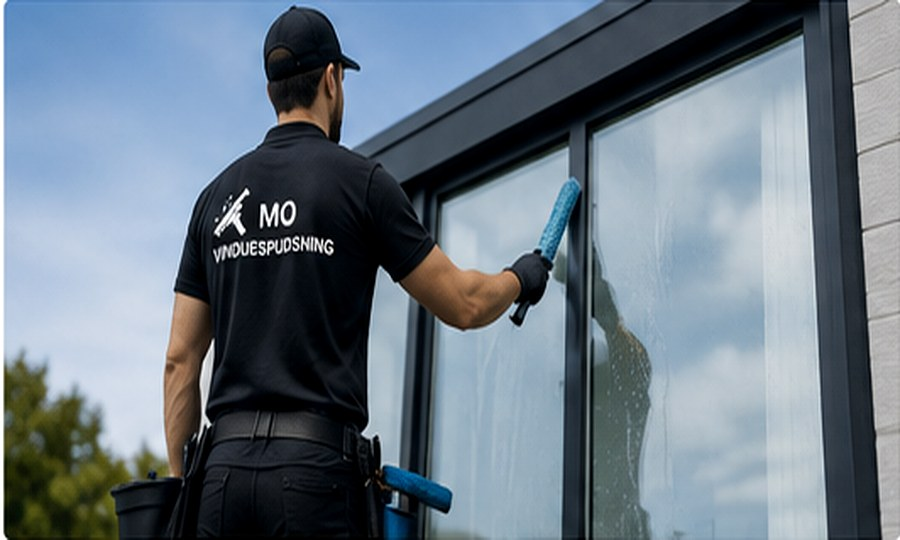
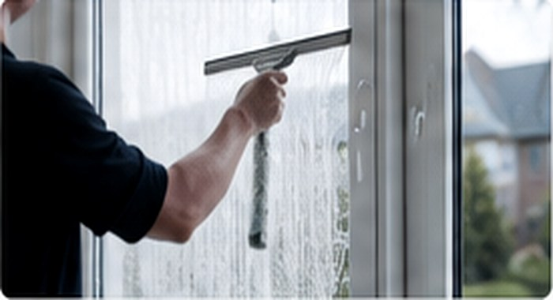
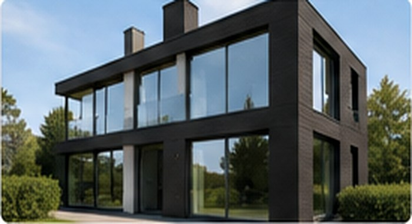

01
Udvendig vinduespudsning
Til dig der bare vil have huset til at se rent og skarpt ud udefra.
Lokal vinduespudser • huse, villaer og rækkehuse
Udvendig og indvendig vinduespudsning med fokus på rene kanter, flot finish og nem booking på SMS.
Simpelt, pænt og professionelt
Vi fokuserer på vinduespudsning til huse, villaer og rækkehuse. Det gør arbejdet mere effektivt, prisen mere fair og resultatet mere stabilt.

Ydelser
Til dig der bare vil have huset til at se rent og skarpt ud udefra.

Godt før gæster, fremvisning, flytning eller når hjemmet bare skal spille.

Vi kan komme fast, så dine ruder ikke når at se beskidte ud igen.
Fra-pris
Den endelige pris afhænger af antal ruder, adgang, størrelse og om du ønsker indvendigt, udvendigt eller begge dele.
Send adressen på SMS. Hvis huset har mange ruder, kan du sende 2–3 billeder, så giver vi en mere realistisk pris.
Få fra-pris på SMSSådan virker det
Send din adresse på SMS. Billeder hjælper, hvis ruderne er svære at vurdere.
Du får en fra-pris eller en konkret pris, før vi aftaler arbejdet.
Vi pudser ruderne som aftalt, og du betaler efter arbejdet.
Resultat
Derfor er siden bygget til én ting: få folk til at sende en SMS hurtigt. Ingen lange tekster, ingen unødvendige formularer, bare tydelig service og kontakt.
FAQ
Vi pudser primært huse, villaer og rækkehuse. Mindre erhverv kan også aftales, hvis det passer til vores udstyr og adgang.
Nej. Vi tager ikke højhuse, rappelling, liftopgaver eller store facadeopgaver i højden.
Ved udvendig pudsning behøver du ofte ikke være hjemme, hvis der er adgang til ruderne. Det aftaler vi på SMS.
Ja. Mange vælger fast aftale hver 4., 6. eller 8. uge, så ruderne holder sig pæne.
Kontakt
Ring eller send en SMS med adressen. Så vender vi tilbage hurtigst muligt.